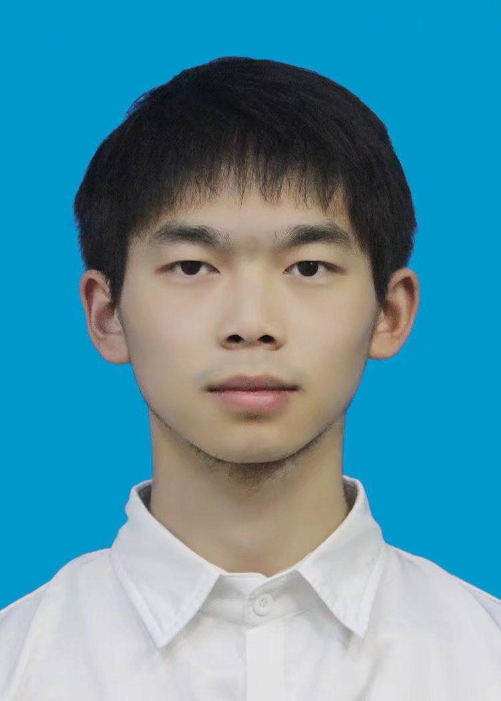

Benze Wu
Hohai University with major in
Computer Science and Technology
Graduate Student
(河海大学，计算机科学与技术)
College of Computer and Information, Hohai University
Email: 201307040023@hhu.edu.cn
Office: Rm3311, QinXue Building, Hohai University Jiangning District, Nanjing


I received a B.E. degree in computer science and technology from Hohai University, Nanjing, China, in 2020. I am currently working toward a M.E. degree in the College of Computer and Information, Hohai University. I am working as a member of HHU-CV Lab under the leadership of my supervisor A.P. Yirui Wu. My current research interests include Classification of remote sensing hyperspectral images, Occluded object recognition, Semi-supervised learning.
You can also follow me on CSDN website with ID c_zhuben or
Github website with ID wzhuben.
Latest News
Future Works
Contact with me
Discussions are warmly welcome. If you want to know more about my works, please contact with me via Email hhuwubenze@163.com.
Research Interests
Papers
Conference Papers Under Review

Forgetting and Updating model.